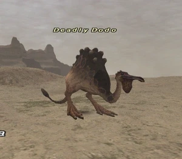

Level 75 reference · Zenith rules
|
Job: Notorious Monster |
 |

|
Zone |
Level |
Drops |
Steal |
Spawns |
Notes |
|
39-40 |
1 |
A, S | |||
|
HP = Detects Low HP; M = Detects Magic; Sc = Follows by Scent; T(S) = True-sight; T(H) = True-hearing JA = Detects job abilities; WS = Detects weaponskills; Z(D) = Asleep in Daytime; Z(N) = Asleep at Nighttime | |||||
 Image source
Image source
Notes:
- Dodo Skin item drop used in Quest: Fistful of Fury (not a 100% drop).
- Lottery spawn from the Tabar Beaks around J-6 to K-6 approximately every 1-3 hours.
- Two Tabar Beaks that spawn in the area shown are the Placeholders.
- Placeholders respawn exactly every 5 minutes.
- Suggestion: Using a 5 minute timer ability such as Sharpshot after killing the Placeholder can help time the next spawn.
- Around 3700HP.
- Killable by: Solo at level 56.
Adapted from Eden Wiki: Deadly Dodo · Contributors and history · CC BY-SA 4.0. Revision 44699. Layout, links and optional background text adapted for Zenith.